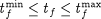
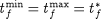
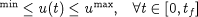
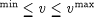

In practice, the time horizon tf will often be subject to certain lower and upper bounds:

In some cases, tf will, in fact, be fixed at a given value, . This can be achieved simply by setting .
As we have already seen in the batch reactor example, it is likely that the control variables and time invariant parameters will also be subject to lower and upper bounds:

